Overview
Retinal Layer Segmentation runs on OCT/OCTA volume for segmenting retina. It runs a deep-learning model on every B-scan, detects the retinal layer boundaries, reconstructs them into smooth curves, and builds a 3-D view of the layers across the volume. Everything runs locally. Your data never leave the machine.
The extension opens its own window, titled RetinalLayerSegmentation.
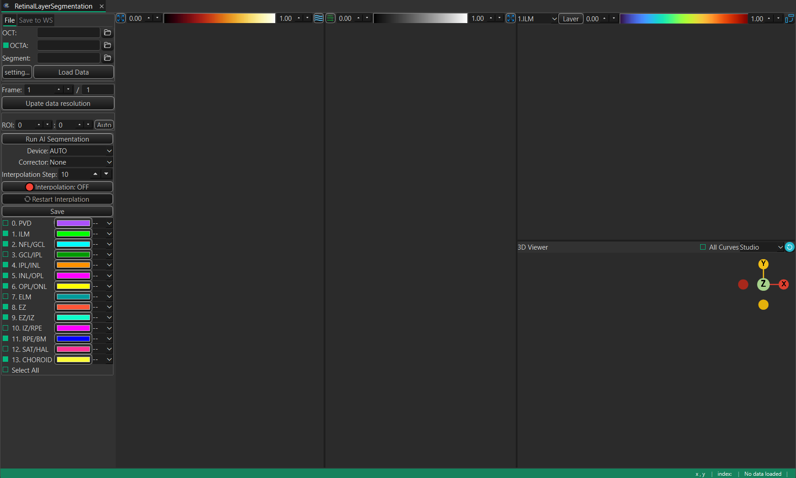
What you can do
- Load OCT and OCTA volumes, load any previously saved segmentation.
- Segment the retina with one click, on the GPU if available.
- Review the detected boundaries, show or hide individual layers, and correct any boundary by hand.
- Interpolate the segmentation across sparse B-scans to fill the whole volume.
- Inspect the result as B-scans, en-face projections and a 3-D surface.
- Send the curves and masks back to the MedICS workspace, or save them to files.
Requirements
- MedICS, installed and running.
- GPU is required for accelate AI retinal layer segmentation.
Install
Install the extension from inside MedICS, the Settings-> Extension.
Open the Extension Manager
In MedICS, open Extensions → Manager… from the menu bar.
Find the extension
Scroll the list to Retinal Layer Segmentation.
Install it
Select the extension and click Install, then wait for the download to finish.
Enable it
If it is not already enabled, click Load. The extension then appears under the Extensions menu, and show on the Activity Bar.
First run
Open Retinal Layer Segmentation. Click the icon shown on the Activity Bar.
Quick start
Open the extension
From the Extensions menu or Activity Bar , open Retinal Layer Segmentation. The RetinalLayerSegmentation opens.
Load data
Option 1: On the File tab pick your OCT volume (and optionally OCTA), then click Load Data — or drag files onto the window.
Segment
Click Run AI Segmentation. Adjust ROI to make sure retinal tissue included inside of ROI. Choose the compute device if you want to run other divice.
Review & refine
Hide or show layers, and use the corrector to fix any boundary.
Save
Use Save to WS to send results to the MedICS workspace, or Save to write files.
The Retinal Layer Segmentation window
The window has two areas. The left panel holds everything you operate; the right side shows four linked views of the data.
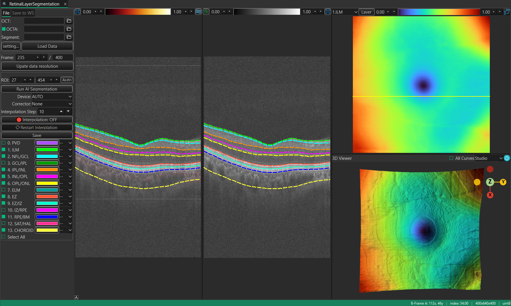
Data source
The top of the left panel loads input data. It has two tabs.
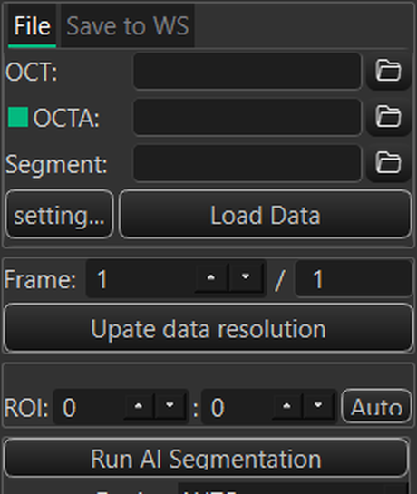
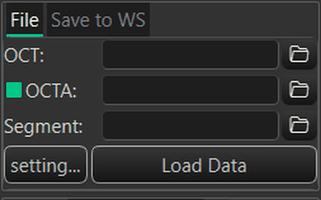
File tab
Choose a file for each input with its folder button, or type the path, then click Load Data to read them together.
| Field | What it loads | Formats |
|---|---|---|
| OCT | The OCT volume (B-scans) | .foct, .oct, .dcm, .mat, .tif/.tiff |
| OCTA | An optional OCTA (angiography) volume, co-registered with the OCT | .ssada, .octa, .dcm, .mat, .tif/.tiff |
| Segment | A previous segmentation (layer curves) | .json, .dcm, .mat, .med |
- OCTA checkbox — uncheck it to load an OCT-only dataset.
- setting… — opens Load Data Settings, where you can review, assign and manage the loader functions used for each data type.
- Load Data — reads everything selected at once.
Save to WS tab
Transfer what is currently loaded back into the MedICS workspace under the names shown. Edit a name if you want a different one, then click the >> button in that row.
| Row | Transfers | Default name |
|---|---|---|
| OCT | The loaded OCT volume | oct_data |
| OCTA | The loaded OCTA volume | octa_data |
| Segment | The segmentation (curves and fluid mask) | seg_data |
Drag and drop
Drop OCT, OCTA or segmentation files anywhere on the window. Files are matched by their name and routed to the right input automatically; you can also drag a variable out of the MedICS Variables panel and drop it on the window to load it.
Frame & resolution
| Control | What it does |
|---|---|
| Frame | The B-scan currently shown. Type a number or use the arrows to move through the volume; every view follows. |
| / total | Read-only total number of frames in the loaded volume. |
| Upate data resolution | Opens a helper to set or correct the physical resolution (pixel size, scan width/height/depth) so measurements and the 3-D view are to scale. Useful when combining volumes acquired at different scales. |
Region of interest
Restrict processing to a vertical band of each B-scan — this speeds segmentation up and avoids the empty space above and below the retina.
| Control | What it does |
|---|---|
| ROI top / bottom | The first and last row (in pixels) that the segmentation will use. |
| Auto | Estimates the retinal band automatically from the loaded OCT and fills in the values. |
Segmentation controls
These controls drive the AI model and the manual refinement. They sit below the data and preprocessing groups.
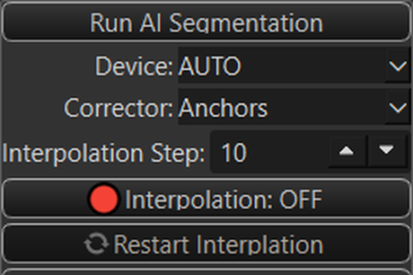
Run AI Segmentation
Runs the deep-learning model on every B-scan and fills in the layer boundaries. If a GPU device is available you are asked which one to use; otherwise it runs on the CPU. Progress and any errors are reported in the status bar.
Sparse data mode
Turn this on for sparse OCT data — scans where only some B-scans were acquired. The model segments only the acquired frames, and you fill the gaps with interpolation. It also keeps memory use down on large volumes.
Device
Chooses how the model runs. AUTO picks the best available device; named entries are the GPUs found on the machine; CPU always works. If a GPU fails, the extension falls back to the CPU automatically.
Corrector
Selects the manual editing tool for a boundary. Pick the boundary by clicking it in the B-Frame B view, then edit it with the chosen tool.
| Mode | How you edit |
|---|---|
| None | No manual editing — review only. |
| Liner | Draw straight segments by clicking along the boundary. |
| Livewire | Click once and the tool snaps to the strongest edge between clicks. |
| Anchors | Place anchor points; the boundary is fitted smoothly through them. |
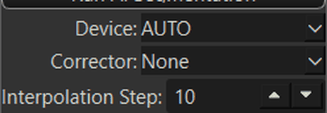
Interpolation
| Control | What it does |
|---|---|
| Interpolation Step | How far apart the segmented key frames are (minimum 2). Used when filling a sparse volume. |
| Interpolation | Turns interpolation on or off. |
| Restart Interplation | Clears the interpolation and recomputes it from the current boundaries. |
Keep Fluid volume
Keeps the detected intraretinal fluid mask when recomputing, instead of discarding it.
Save
Saves the current segmentation to a file (curves and, optionally, the fluid mask). To send the result to the MedICS workspace instead, use the Save to WS tab.
Layer boundaries
The Layer boundaries group lists every boundary the model can detect. Tick a box to show and export that boundary; use the small dropdown next to it to choose how it is drawn (dashed or solid line). Select All toggles every boundary at once.
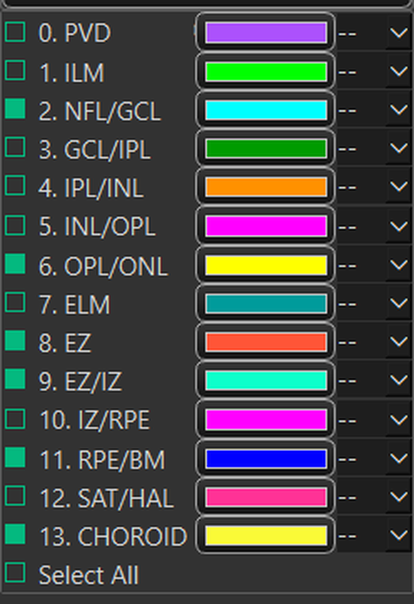
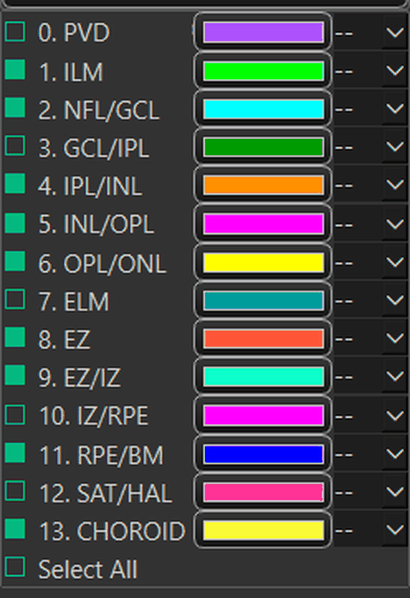
| # | Boundary | Default | Notes |
|---|---|---|---|
| 0 | PVD | Off | Listed for completeness; not produced by the current model. |
| 1 | ILM | On | Inner limiting membrane. |
| 2 | NFL/GCL | On | Nerve fibre layer / ganglion cell layer. |
| 3 | GCL/IPL | Off | Listed for completeness; not produced by the current model. |
| 4 | IPL/INL | On | Inner plexiform / inner nuclear layer. |
| 5 | INL/OPL | On | Inner nuclear / outer plexiform layer. |
| 6 | OPL/ONL | On | Outer plexiform / outer nuclear layer. |
| 7 | ELM | Off | Listed for completeness; not produced by the current model. |
| 8 | EZ | On | Ellipsoid zone. |
| 9 | EZ/IZ | On | Ellipsoid zone / interdigitation zone. |
| 10 | IZ/RPE | Off | Listed for completeness; not produced by the current model. |
| 11 | RPE/BM | On | Retinal pigment epithelium / Bruch's membrane. |
| 12 | SAT/HAL | Off | Listed for completeness; not produced by the current model. |
| 13 | CHOROID | On | Choroid. |
A few boundaries are listed for completeness but are not produced by the current model; enabling them does not add a curve. The remaining boundaries are detected automatically.
The views
The right side is split into four linked views. Moving the frame — or picking a point — keeps them in sync.
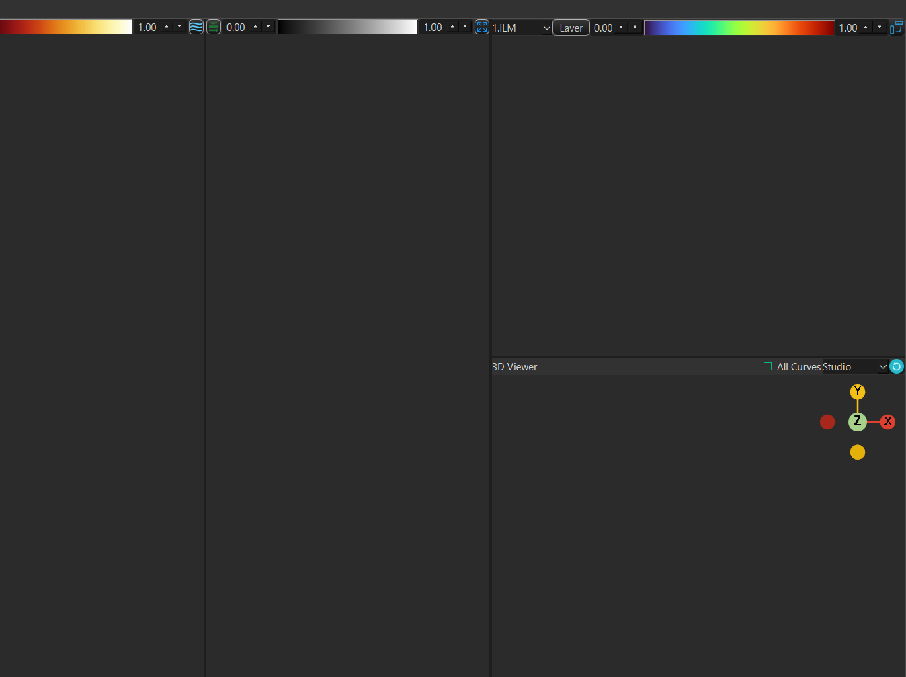
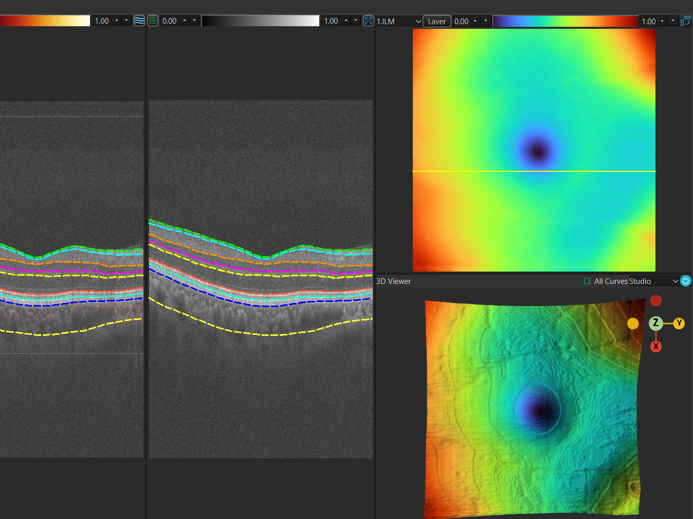
| View | Shows |
|---|---|
| Left B-Frame | A single B-scan with all visible layer curves drawn over it. |
| Right B-Frame | The editable B-scan — the corrector tools work here. |
| En-face | A top-down projection. The Layer / OCT / OCTA button cycles the projection, and the neighbouring dropdown picks the slab or layer to project. |
| 3-D | An interactive 3-D surface reconstruction of the layers. Rotate, zoom and pan; clicking the surface jumps the other views to that location. |
View toolbar
Each view has a small toolbar. Hover a button to see what it does.
| Button | Action |
|---|---|
| Hide Curves / Show Curves | Toggle the layer curves over the B-Frame image. |
| Fast / Slow Scan View | Switch the interpretation of the second Left B-Framexis between fast-scan and slow-scan, which changes how the two B-frames and the en-face view relate. |
| Transpose ON / OFF | Swap the horizontal and vertical axes of the image views. |
| Layout | Stack the B-frames or place them side by side. |
| Reset | Reset the camera / zoom of the view. |
| Collapse | Hide the left or right side so a view can fill the window. |
Status bar
The bar along the bottom reports where the pointer is and what the data is.
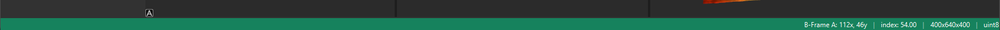
| Readout | Meaning |
|---|---|
| Pointer position | Where the pointer is in the hovered image, in data coordinates. |
| index | The pixel value under the pointer. |
| Shape | The loaded volume's shape (frames × rows × columns); shows No data loaded before you load anything. |
| Dtype | The volume's data type. |
One-off messages — loading, saving, warnings — also appear here.
Keyboard shortcuts
The window has no menu bar; these are the keys you can use while working.
| Keys | Action |
|---|---|
| ↑ / ↓ | Previous / next B-scan. |
| ← / → | Jump ten frames back / forward in the main window; in the layer view, jump by the current Interpolation Step. |
| Ctrl (hold) | With the pointer over a view in Slow Scan view, moving the pointer scrubs through the volume (see below). |
Mouse & interaction
| Action | Result |
|---|---|
| Move over a B-frame or en-face view | Updates the pointer readouts in the status bar. |
| Ctrl + move in a B-frame (Slow Scan view) | Scrub through the volume: the horizontal position selects the corresponding slice/frame in the other views. |
| Click in the 3-D view | Picks the surface point under the pointer and moves the B-frames and en-face indicator there. |
| Drag in an image view | Pans the image (use the mouse wheel to zoom). |
| Click a boundary in Right B-Frame | Selects that boundary for editing with the chosen corrector. |
| Drag / rotate in the 3-D view | Orbit, zoom and pan the surface. |
| Right-click on the image views | Open the plot's context menu. In MedICS the default entries are disabled, so the views are driven with the toolbar buttons and the mouse (see Menus). |
Menus & context menus
| Menu | Where | Contains |
|---|---|---|
| Extensions menu | In the MedICS main window | Opens the Retinal Layer Segmentation window. |
| View context menu | Right-click over a B-frame or en-face view | The plot's own menu. MedICS disables its default entries, so it exposes no actions — use the view toolbar instead. |
| Corrector editor menu | Right B-Frame, when a corrector tool is active | Editing options for the boundary under the pointer. |
| Loader context menu | Right-click an entry in Load Data Settings | Delete — marks the loader function as deleted so it is no longer offered. |
The window itself has no menu bar; every action lives on a control in the left panel or on a view toolbar.
Saving & exporting
| Goal | How |
|---|---|
| Use the result in other MedICS tools | Save to WS tab → send oct_data, octa_data and seg_data. |
| Write the segmentation to disk | Save in the control panel. |
| Keep the fluid mask | Tick Keep Fluid volume before saving/recomputing. |
GPU acceleration & troubleshooting
Segmentation is far faster on a supported GPU. It uses an ONNX Runtime model with an optional NVIDIA CUDA provider. GPU acceleration needs the driver, the ONNX Runtime build and the CUDA/cuDNN libraries to match each other.
| Symptom | What to do |
|---|---|
| Log says CUDA is unavailable; runs on CPU | A CPU-only ONNX Runtime is installed. Install onnxruntime-gpu (and remove plain onnxruntime) on Linux/Windows with an NVIDIA GPU. |
Crashes on a Conv node (CUDNN_* errors) | The CUDA stack is loaded but the cuDNN kernels do not support this GPU, or the cuDNN version does not match the ONNX Runtime build. Match the versions, or let it fall back to CPU. |
| Older GPU (e.g. GTX 10-series) | Recent cuDNN builds no longer support pre-Turing cards. The extension falls back to the CPU automatically; for GPU, install an older ONNX Runtime GPU build that still targets your architecture. |
| Want to force CPU | Choose CPU in the device selector. |
| Model missing after install | The model downloads on first use; an offline machine needs it fetched in advance. |
To check the installed build, run python -c "import onnxruntime as ort; print(ort.get_available_providers())" — you want CUDAExecutionProvider listed.
Notes & limitations
- Only boundaries produced by the model are drawn; a few listed boundaries are placeholders.
- Automatic CPU fallback means a too-old GPU still yields a result, just more slowly.
- Sparse volumes must be interpolated to obtain a dense segmentation.
- The segmentation is computed locally; no image data is uploaded.